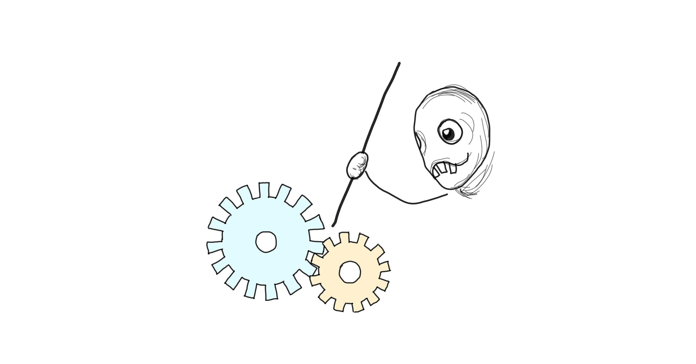

Slow and boring: how to build reliable software
- 30 min read

How does one get to a 99.999% of uptime on their public, frequently used API?
The usual answers are all focused on technical solutions. I suppose your tech stack, architecture, deployment strategy, and all these wonderfully concrete choices matter a lot. The right technical decisions are the foundation for reliable software and they are necessary.
But I have some bad news. Correct technical choices may be necessary, but they are also completely insufficient. We may make all the right technical decisions, pick the best solutions in each category, and still end up with a dumpster fire.
At the end of the day, it’s the weakest link that dictates your reliability. And for a vast majority of organizations out there, that weakest link is not software or architecture. It is leadership.
Ok, hold on - are we talking about how a synergistic paradigm shift empowers people to go the extra mile and disrupt the status quo? In a way. If by that we understand the situation where the leaders do something that sounds great (to them), something every other company is doing (or so they think), that at the same time completely derails software engineers’ efforts to make their software reliable. And there are a number of such gotchas.
Capacity and planning
In software, we’re obsessed with efficiency. I’m not talking about optimizing our code, that is a whole separate can of worms. I’m talking about the so-called “productivity”, the efficiency of our software engineers. We always want to move faster, deliver more, we glorify velocity. High performing teams are synonymous with teams that do a lot. Somehow it’s never about the amount of value that gets generated, no, that would require us to have clarity on our business objectives, or worse, talking to our users. Instead, we focus on the “work”. How much did we deliver? How fast? Could we do more?
If our “main” work or project doesn’t take up all the time, we add side projects. If everyone is not super busy all the time, we simply add more work. Or worse, we let some people go and tell the remaining ones to do “more with less”. The expectation is that we fill up every single working hour we have available. If we don’t do that, we’re slacking off. And that is totally, utterly wrong.
I sometimes wonder if the software industry is simply still too young and naive. How else do we explain this pervasive assumption that all our processes that produce output - individual engineers, software teams, organizations - should run at full capacity, at all times. And if they don’t, we must tweak and improve until that 100% capacity utilization is reached. Do you know what happens when you run something, especially if it’s a complex process or system, at full capacity at all times?
Things break.
This is well known in manufacturing. Running equipment at 100% utilization all the time means skipping preventative maintenance and increasing the amount of defects, as there’s no time to notice or stop them. And that’s even before we factor in the variability within the work. No responsible manufacturing shopfloor manager would run their machines at full capacity at all times.
If people in manufacturing know that 100% utilization is a pipe dream detrimental to the overall operations, and they’re dealing with machines - which have predictable, repeatable outcomes - why do we think we could get away with running our software teams - which are adaptive, unpredictable systems - at full capacity and suffer no ill consequences?
In software, our work is by nature significantly variable. If we’re creating something new, we simply cannot know how long it will take. We may guess, but then there are all those pesky unknown unknowns that surprise us. What’s worse, we cannot know if the software we’ve released contains a bug or not, no matter how much we test. Which means, sometimes, we may have to deal with a critical issue on short notice that didn’t figure in our plans. If we don’t have a healthy time buffer in our day to day work, all this variability and unpredictability will eat into the overall quality of the thing we’re trying to ship. Which means more issues in production and the cycle continues.
Seasoned software engineers know this, at least intuitively. That’s why we often play this little game whenever someone asks us the dreaded “how long will this take?” - we take a guess, then multiply it by two (or whatever magic number we’ve arrived at through the wounds and scars of previous projects). But that’s no good. The underlying assumption is still that everyone is going to give it their all, their full capacity, at all times. That’s how we organize our work, how we make long term plans, how we decide how many engineers to hire, or what to promise to our customers. We may add a hefty padding to our estimates, but that only affects deadlines, it doesn’t fundamentally change the expectation that our teams will go as fast as possible or deliver as much as they can (read: more than they currently do). And that creates an environment hostile to reliability.
When our work is organized with the assumption that everyone, every team and organization is operating at 100% capacity at all times we leave no space for people to stop and think. We have no time and no mental space to ask the crucial questions: what are we really doing? Why are we doing it? Is there a better way? We have no time to look back at the work we’ve already done and try to improve it or find a more optimal solution. We barely have time to fix mistakes we’re making along the way, let alone try to prevent some theoretical, future mistakes. And we make more mistakes in the first place. This is not how you end up making software that’s super reliable.
Building reliable software requires a little more thinking than just rushing as many features as fast as possible. And we need to give our engineers time to do that. Sadly, this thinking time cannot be explicitly scheduled or planned for, it has to be built into the system. We simply cannot know which problem will require more deliberation until we encounter it. We need some slack in our capacity, a buffer of sorts, so that people have the freedom to stop and think whenever they feel it’s necessary. That sort of freedom doesn’t exist if every working hour is accounted for.
If we want our teams to produce reliable software, we have to slow down. We cannot be operating with the assumption that everyone is working at 100% of their capacity all the time. And that assumption is so pervasive that it’s baked into a lot of very popular ways of managing work.
I’m looking at scrum here, which is a system centered around velocity, focused on maximizing the output with the expectation that more is better. But if we’re talking about reliability, more is not better. Better is better. Relying on scrum to manage our work forces us to take extra steps if we want to ensure that our engineers have that extra time to stop and think when necessary, because scrum assumes you can plan ahead if the time horizon is a week or two. That’s simply not the case. Within the scrum framework, we only have two ways of dealing with unplanned work or bits that take extra thinking time - assigning a buffer explicitly or constant juggling of things between sprints. Neither is optimal.
A planned buffer within a sprint means idle time when such buffer is not necessary. While we want to slow down, we don’t want to be wasteful. Moving things out of a sprint happens all the time, which begs the question why do we do all those lengthy rituals centered around sprint planning, if we are just going to throw them away? However, I don’t want to go too deep into all the problems with scrum, so let me jump straight to the core issue - if we want our engineers to have mental space for thinking when needed within the scrum framework, whoever is managing that team needs to be saying “no” a lot. To their customers, to other teams, and most importantly, to their boss. That’s what’s known as a career limiting move.
So why not just switch the way we work to a system that’s better suited to accommodate all the variability and unplanned work? If you haven’t tried kanban yet, it’s time to give it a go. Kanban is ideally suited for high reliability work, because instead of focusing on the velocity and the output, it focuses on throughput and highlighting the bottlenecks. Which means the work progresses at a steady, stable pace.
And here comes the problem… When things are stable and steady, they feel slow. And I mean, really slow. They aren’t necessarily slow in reality, but they feel that way. If there are no bumps, it’s difficult to tell how fast you’re going. Lack of peaks and valleys of delivery means boring status reports. Most managers get twitchy in these circumstances. And twitchy managers tend to put pressure on teams to go faster and do more.
The pressure to fill 100% of your capacity with work tends to come from the leadership. What ends up happening is that middle managers face pressure from their managers and at the same time feel out of control. It is not them doing the work after all. Middle managers rely on their teams to correctly report on what’s going on, otherwise they struggle to perceive the work being accomplished and don’t know how to communicate it further to their managers. When the work is done at a steady and stable pace, it almost disappears, like a background noise we get used to. And managers are people too. They want to feel that they’re doing something, that things are happening. So they push the buttons and pull the levers until they do.
If you’re that kind of manager, stop. Just stop. Accept that you’re not the one doing the work. US Navy Seals have a saying “Slow is Smooth, Smooth is Fast”. It’s a good reminder that slow is actually good. Accept it! It’s good when things feel a little slow. And maybe pat yourself on the back - if things are smooth and steady, you’ve done a good job creating an environment that permits it.
Incentives
There is one thing in software that inevitably kills reliability over time. It’s a tricky one: hard to notice and it only manifests over long periods of time, at which point it's hard to even connect the dots. I'm talking about incentives.
Guess what happens when you release software that’s super stable, works exactly as the users expected it from the get go, has no obvious bugs?
…
Nothing happens.
That’s the problem. When we release reliable software, once we’re done being happy that we just released a major piece of functionality, there is nothing else to celebrate. Ever. If we did a good job writing stable software, things are going to be super boring.
Can you imagine the whole software organization throwing a party because nothing happened? Can you imagine getting promoted because everything you’ve ever released was utterly boring and uneventful?
Of course not. We tend to reward people or feel good about ourselves when something happens. We really need a trigger of sorts. It's very natural, it's how the human brain works. And in this case, it works against us. So we reward people when they do something visible, tangible. Like releasing a new feature. Or fixing that critical bug after hours. Or getting to the bottom of that one customer complaint.
It may seem like this is fine, but it's not. If you only ever reward people when something happens, what are you really rewarding? I can tell you - whatever it is, it's not reliability. In fact, making the software reliable is effectively getting punished in that system. I wrote about it before but it's worth reiterating.
When a team does a good job writing their software, there are precious few moments that look like an opportunity for a reward. There is pretty much the release, and that's it. On the other hand, if a team releases software that's faulty or doesn't quite meet customers’ expectations, it creates more potential to be recognized and rewarded. Over time, this becomes a forcing function that favors people and teams who react to issues instead of preventing them. People who are rewarded stay at the company, people who aren’t - move on or change their behavior. Which in turn means that, over time, your software is going to get less and less reliable.
Now let's get back to that manager whose teams are performing steadily, at a sustainable pace without peaks and valleys. It feels slow even though in reality it may be fast, because of that lack of peaks and valleys, so our manager gets twitchy. Now imagine that not only things appear slow, but also all releases are totally uneventful. Our twitchy manager is going to lose it. Especially if they drink the silicon valley Kool aid unicorn juice. Are the teams not ambitious enough? Are they taking it easy? Could they do more? Or maybe we don't need as many people? It doesn't matter that those teams spent a lot of effort simplifying their codebase, coming up with solid architecture or preemptively addressing issues. That sort of work just isn't very visible, not to mention it often falls prey to the preparedness paradox. If we do work to ensure nothing bad happens - no critical bugs, no performance issues, no deployment failures, how do we know it was, in fact, our work that prevented the issues? Maybe it would have worked anyway? Besides, how bad can it get?
Any preemptive work aimed at increasing reliability - architecture and design, structuring code for readability, abundant unit test coverage, simplifying the infrastructure, refactoring, and so on - doesn’t produce tangible output and, consequently, is hard to sell to a VP or an executive. It’s hard to justify a promotion for people who… what did they do exactly? They did some work a few months back and now nothing happens? This situation just doesn’t make a compelling story. And even if we accept that our engineers did a very good job ensuring stability of our software, what’s the manager’s part in this? How would they justify they did a good job managing that team? What stories do they tell about themselves to their boss? And so, in the search for strong “success stories”, our twitchy manager is going to push their teams to “do something”. They will find the “low performers” and “manage them”. They will break some teams apart, reshuffle people. They will add more items to their roadmaps, whether the users ask for it or not. In other words, they will create problems where there are none and punish the teams whose software is too stable. And over time, the engineers learn it’s not worth putting in all the work when those who do a sloppy job end up being rewarded as long as they heroically (and publicly) fix their own mistakes after they land in production. Some of the good engineers leave. Those who remain get increasingly bitter and maybe end up being managed out.
I have to make it clear - this is almost never intentional. Very few sane managers ever decide to just stir the pot and create some drama. It’s simply a second-order, side effect of how we reward people and the fact that we really need for something to happen in order to trigger that reward. And when our software is stable, all our releases are frequent and flawless - nothing notable ever happens.
This is one of the hardest problems I’ve faced in my management career.
The difficulty is twofold: recognizing that nothing happened (so noticing an absence - easy peasy), and attributing that absence to the right people who prevented the issues from occurring. Both require us to go against our natural instincts and counter cognitive biases that are very much wired into our brains. And this has to be done at every management level, all the way up to the CEO, otherwise someone in the middle is going to get squished out until we’re back to incentivizing problem creation. Yeah, good luck with that.
I have to admit that the solutions here aren’t perfect. I’m still searching for a way to deal with this problem that wouldn’t feel as brittle as what I currently have. But we have to start somewhere, don’t we?
When our software is reliable, we have no trigger to notice and reward people for building such awesomely reliable software. We must create that trigger, which means scheduled reminders. Put it in your calendar. That’s what we do at Authress, we want reliable software after all. So every year, quarter, month, look back and notice that nothing happened: there were no bugs in production, no outages, no one had to do any on-call work, all systems are nominal. Boring! And if you care about reliability, boring is good! Notice the boring. And celebrate! Throw a little appreciation party for the teams ensuring this blissful, boring stability. Give them a shoutout at your next big team meeting. Include this fact in the next performance review and when considering promotions.
At the same time, we need to avoid explicitly rewarding problem solving, and this part is even harder than noticing that nothing happened. Most humans feel intrinsically rewarded when they solve a problem. But if we don’t want our system of rewards to subvert our goal of building reliable software, we really cannot make people feel like heroes when they address a critical production issue. Ideally, we should all be a little embarrassed that the problem happened in the first place. It’s easy to reward heroics, but building reliable software correctly doesn’t leave space for heroics. So we should treat them as a symptom of a deeper problem rather than a reason to celebrate. This is culture. And it’s real, hard work on the leadership side.
Now I’m not saying we should punish people for bugs happening in production or assign blame for incidents - that is how you lose all the best engineers and end up with slow releases of poorly written software. Lack of reward is not the same as punishment (although some people out there seem to think that way, but that’s a topic for a whole other article). We really want a culture where releasing software that “just works” is seen as evidence of competence, and production issues, if they happen, are considered a nuisance, extra work with no benefit. Did I already say this is hard?
Lazy people
So far I’ve talked about creating an environment that encourages building reliable software. This includes leaving some engineering working hours unaccounted for, so that there is some slack in the system that lets people stop and think. On top of that, we want to reward people when they build stable software, which means noticing when nothing happens and celebrating boring releases. That brings up a justifiable concern - wouldn’t such an environment invite lazy people who just want to sit and do nothing?
In a way, yes. And in a way, we actually want lazy engineers. But there is lazy and there’s “lazy”.
Different people enjoy doing different things. Some like doing repeatable, predictable tasks where they can switch their brains off. Others like being under high cognitive load or faced with the unknowns. Some like experimenting and discovering new things. Others like improving what is already done and making it perfect. Different people also dislike doing different things - what one person finds enjoyable, another may find absolutely dreadful. And different people react differently to things they dislike. Some will avoid them at all costs, while others will try to eradicate all possibilities involving the unwanted tasks, doing extra work in the process. It’s easy to mistake “doesn’t want to do a thing” with laziness, but in reality, very few people are genuinely lazy. Most people like doing stuff, as long as it’s something they enjoy and are good at. All we need to do is to hire people that enjoy doing the types of things we want them to do. Seems straightforward, yet so many companies fail here.
There are many mental models out there grouping people together in clusters to make reasoning about them easier. One model I like is the Pioneers, Settlers, and Town Planners concept from Simon Wardley. Wardley introduced this model in the context of product strategy, but I find it useful to keep in mind when considering the people involved in building software, and especially when considering software reliability. (Aside: if you’re interested in systems thinking and business strategy, go read Wardley Mapping; or at least a summary of the practical bit) Here is the model in a nutshell:
- Pioneers are people who explore uncharted territories. They experiment and come up with ideas no one has thought of before. They are the inventors. They move quickly, prototyping and discovering. They thrive in uncertain, poorly understood areas.
- Settlers are people who turn ideas into usable stuff. They polish the unfinished just enough to be useful to someone, they listen to the users and maximize the value of each thing. They bring order to chaos, they productize. They need talking to users, or stakeholders to thrive.
- Town planners are people who make usable stuff scalable. They standardize, industrialize, make it repeatable. They make things faster, better, more efficient, optimized. It’s not just order at scale, it’s consistency. They thrive in stable, predictable environments.
Think of these not as identities or roles, but as attitudes or archetypes. And each of these archetypes comes with a dark side, a failure mode:
- Pioneers produce half-baked prototypes. That’s what they do, it’s part of exploration. This may result in lots of unfinished, broken stuff, tech debt, mess, bugs, no one knows how these things really work.
- Settlers listen to the users and try to please them. That’s what they do, it’s part of getting stuff to market. This may result in lots of custom hacks, unique snowflake solutions, projects that never finish, software that’s never retired.
- Town planners standardize, introduce process, codify the rules. That’s what they do, how else are you going to scale? This may result in lots of bureaucracy, red tape, overengineering, bloat.
Every model is wrong, some models are useful. And people don’t always fit into these archetypes neatly, but most people will have a preference, or a mode they are most effective in. It’s good to understand which of your people are best suited for which of these archetypes. That’s because when building software, depending on what it is, for whom, and on what stage of maturity, we need a different type of prevailing attitude.
When we’re building a prototype or experimenting, we want pioneers. They are going to be most effective. If we put town planners on our prototype work, we will get an overengineered monster, it will take a long time, people will get frustrated along the way. But when we want to put something out there that’s reliable, we really want those town planners. They are going to make sure things are optimized, that there are no surprises. If we put pioneers on this type of work, we’ll end up with failures everywhere, and that’s if they don’t get bored half way or start working on something completely different we didn’t even ask for.
So if we want reliable software, we have to pay attention to what sort of people we’re putting up for this task. And here’s a fun fact. You can only have town planners working on your software if you’ve hired town planners. Granted, some people, especially the settler type, are able to stretch a little and operate in a different mode for a time, but that won’t be as effective as hiring someone who has a strong affinity with the archetype we want.
Guess who interviews best.
When hiring, we create this artificial environment that’s high pressure, high stakes for the job candidates. It rarely represents the actual day to day work accurately. We make people write code while someone’s watching and the clock is ticking. We ask them to tell us stories about their past experience on the spot. So when interviewing candidates, we tend to favor people who are confident under pressure, talk smoothly even in uncertain situations, have strong success stories…
Yeah, that’s exactly where our town planners famously thrive.
Typical job interview setting for technical roles tends to filter town planners out, which means we rarely hire people who are best suited for making reliable software, unless we rethink our hiring process. Part of the problem is that most companies are simply bad at hiring. But I don’t want to make this about interviewing practices, so let me just say we can’t have a single process for every role and every context. If we want to hire people who will build reliable software, we want to pay more attention to attitude and working style than nitpicking their technical skills. This seems counter-intuitive, because we typically think of reliability as an embodiment of technical excellency. But while some baseline of technical proficiency is necessary, technical skills are easy to learn while disciplined approach and attention to detail are not.
So adjust your interview process to make sure it lets town planners through. Remember they may not be the smooth talkers and they may fail a live coding test because they may not work well in environments they can’t control. Instead, give them some of that control and see what they do with it. Train everyone involved in interviewing the candidates to spot the town planner archetype.
If you were paying attention, you realize that simply selecting for a town planner type of attitude is not enough to end up with people who will produce reliable software, because this attitude comes with a rather nasty failure mode (overengineering, rigid process, bloat). That’s why we want to hire not just any town planners, we want the lazy ones.
There is a particular type of a lazy engineer - one who doesn’t like doing extra work and will do work to avoid work. It sounds confusing, but chances are you know exactly what I’m talking about. It’s that person who will automate their process because they hate clicking buttons. It’s that person who will hop on a video call with a customer to learn what they really want because they don’t want to implement that additional feature. It’s that person who will add verbose comments to their code because they can’t be bothered to investigate what each piece of uncommented code does. This is the good kind of lazy. And ideally, we want to pair our lazy town planner-type engineers with a few settler-type people, to make sure there is enough drive in the teams to build stuff that’s useful.
Organization
If rewarding people for solving problems is what kills your software reliability over time, the solution to that problem is what keeps it dead and twitching.
Even if you do everything right - hire the right kind of people - the town planners, leave plenty of their time unaccounted for so they can stop and think, and incentivize problem prevention rather than problem solving - all of it falls apart if the last step is to take all of this and bundle it together in one organization with a specialized purpose that’s not simply “making software”. Some companies love doing that, especially if they perceive reliability as an important factor. If it’s important, it surely deserves its own org structure, with managers, directors and maybe even an SVP?
Except you can’t separate reliability from building software. Reliability is a property of the software, it emerges as we’re writing it. It is a consequence of a thousand and one tradeoffs made along the way. If you start thinking about reliability once your software is already running somewhere, your options are seriously limited. It’s the same with all the other -ilities: quality, security, accessibility - they cannot be tacked on after the fact, unless we’re happy spending a lot of money and resources for a poor result. We all may make fun of “shift left” as a silly management slogan, but it doesn’t make it any less valid. If we want reliability, we have to start thinking about it as soon as we start thinking about what to build.
This means that it’s the software team’s responsibility to make their software reliable. There really is no other way. Which in turn means that any separate organization dedicated solely to ensuring reliability is going to undermine that responsibility.
Creating an organization or team dedicated solely to software reliability, so something like SRE or DevOps engineering, to work in parallel with people who are writing the software features may seem like a great idea. It highlights the importance of reliability (it’s its own budget item!) and, theoretically, attracts people who have experience with and are passionate about the subject. But it’s really just a lazy cop-out that makes managers feel good without actually improving the reliability. When we create a separate software reliability organization, two things happen. People who make software no longer need to care about making it reliable, because it’s someone else’s job. And people who are officially responsible for reliability need the software to be unreliable, so that their jobs remain justified. Do we think this means more or less reliability in the long run?
Having a separate organization responsible for software reliability means one of two things. We either end up with a bunch of all-important gatekeepers slowing everyone down - this is very rare these days and mostly limited to old school companies in highly regulated environments - or, more likely, we get a team that's doomed to fail. Since our reliability people are not there to build software, their ability to influence reliability is limited to dealing with outages rather than preventing them. They end up being the janitors, always cleaning someone else's mess. They're the underdogs of the company, permanently swamped with issues they have no authority to truly fix. They're associated with failure, since that's when they're the most visible. Consequently, they're not as respected or well rewarded as their colleagues who deliver software features, even if those features are riddled with bugs. If this still sounds like a good setup, I don’t know how you’ve managed to read this far.
With all that said, there is one model where a separate “reliability” organization has a chance of working, and that’s when it’s set up as a sort of internal consultancy - not to be responsible for software reliability, but to provide expertise and tools for software teams who are then supposed to make reliable software. So rather than being the janitors dealing with outages caused by software teams, the reliability organization provides education and advice. This sounds neat but is horribly expensive. No wonder this model originated at companies with huge software engineering headcount and very deep pockets. There aren’t that many software companies in the world that can justifiably afford it in the long term, yet many are trying to copy this model. In those cases, it’s really hard to prevent a drift from the strict internal consultancy model towards the janitorial services as I’ve described above.
In reality, if we care about software reliability, there is only one way to achieve that - DevOps. And by that, I mean the original concept before our industry co-opted the term to mean simply “operations for software”. You build it, you run it. Software team’s responsibility shouldn’t end when the code is committed, because the code itself is not what is valuable. The code running in production, being used by the customers (and I mean “customers” in a very broad sense; internal users are also customers) is what matters. And that’s where the only failures that matter happen. If we isolate software engineers from what’s in production by making it someone else’s responsibility, we’ll see tradeoffs that optimize for anything but reliability. Tradeoffs that are impossible to correct post-release. Such separation also further amplifies the problem with incentives and rewarding people, which I’ve already talked about.
Business (has the last word)
Technical decisions, while an important factor, have only partial impact on software reliability. At most companies, the underlying reason for reliability problems is on the management side. That’s because in order to create reliable software, we need an environment that would support it, rather than hinder it. Which means avoiding the urge to account for every working hour of our engineers, so they have time and mental space to think about reliability as they’re writing software. It also means noticing when things are boring and rewarding the teams when nothing happens. And it means hiring people who prefer to improve, standardize, automate and polish - people who are the town planners - to write our software. It also means embracing the DevOps, as in “you build it, you run it”, so no little kingdoms dedicated solely to software reliability. All of this is hard and requires leadership, not just management. It’s so much easier to push this effort downstream and pin it on the engineers themselves.
That’s why it’s important to understand whether the need for software reliability is an actual business need, rather than a slogan.
When you ask any engineer or any manager if they want their software to be reliable, they are going to say yes. Of course they are going to say yes - more reliable is better than less reliable! Who wouldn’t want that? But unless that need for reliability comes from the core of the business, it’s going to be hard to create the necessary environment, because such an environment requires management incentives to be aligned across the whole company.
Unless the CEO agrees that keeping the software reliable is an essential component of the business strategy, we will see a lot of pressure to deliver results that are flashy, marketable, and easy to explain to the shareholders. This in turn puts pressure on the middle managers to produce success stories and “everything is stable, nothing really happened” is just not a compelling story. Which means pressure on the line managers to come up with some exciting numbers, like more features released or increased productivity clearly visible in a neat report - none of that makes it easier to produce reliable software, and very often undermines it.
So if you’re working with a team tasked with producing reliable software, it’s worth confirming: does it really need to be reliable? And just how reliable - five nines of uptime, or simply not crashing and burning? If it’s the latter, we’ll be fine if we set things up for dealing with outages, which is a well-known default in software development. If it’s the former, then we’re talking about preventing the outages from occurring in the first place and that requires leaders who are aware of all the gotchas I’ve outlined. In the end, it’s the needs of the business that dictate the strategy, which will dictate the approach.